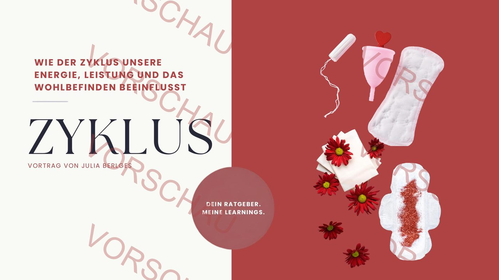
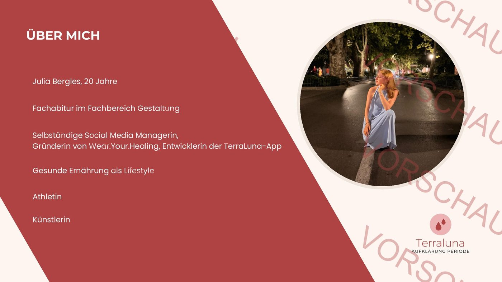
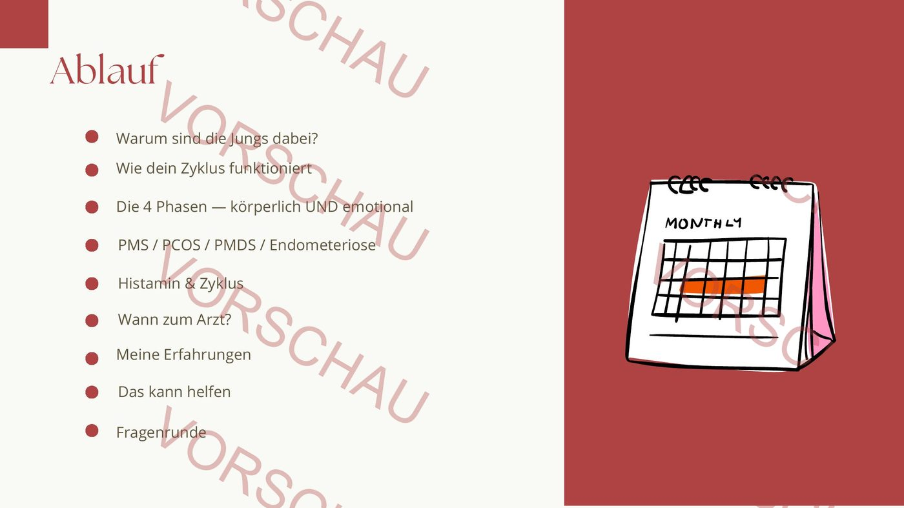
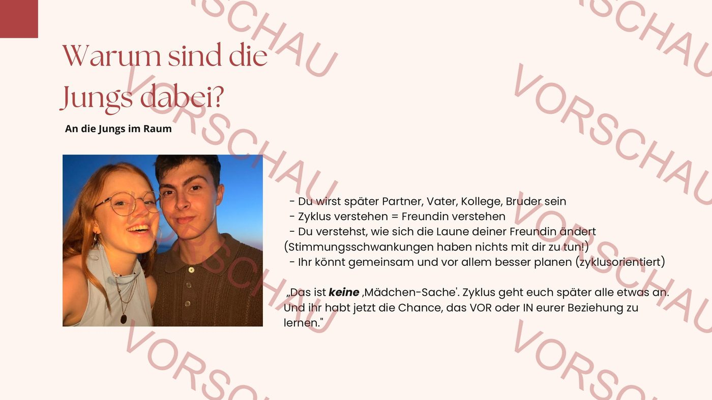
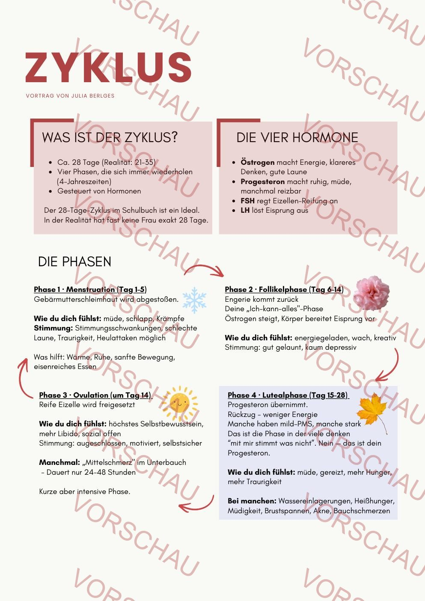
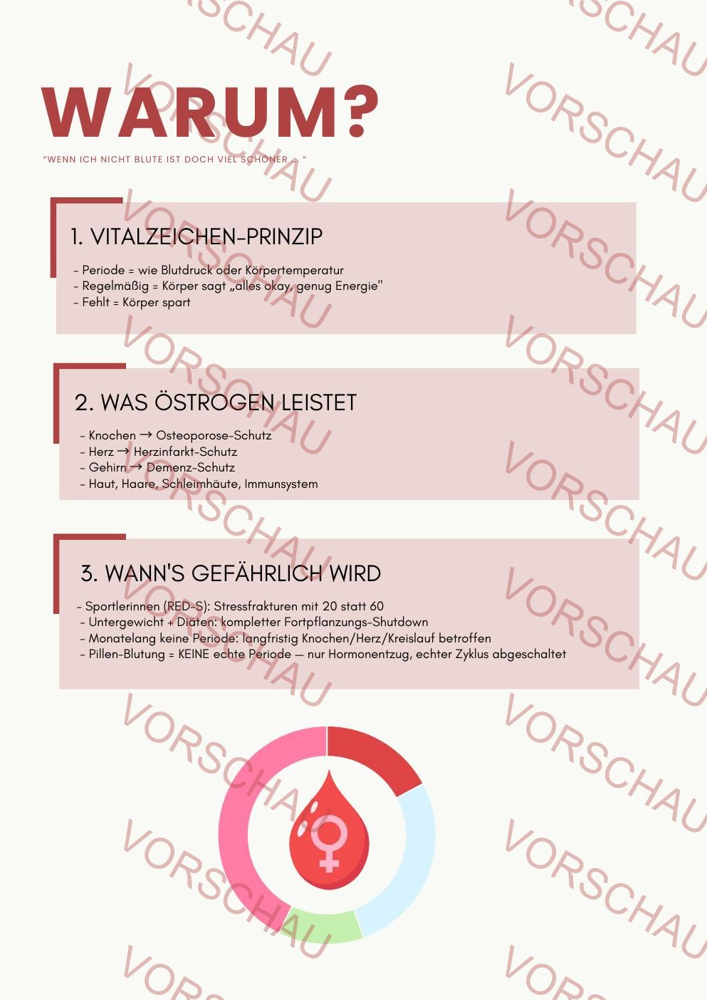

Für Schulen
Sowas hätte ich früher gerne gewusst.
Ich stand komplett alleine da. Deshalb gehe ich heute in Schulen und rede ehrlich über das, was mir gefehlt hat.
Ich stand komplett alleine da. Deshalb gehe ich heute in Schulen und rede ehrlich über das, was mir gefehlt hat.

Mit 19 hatte ich einen Darmverschluss. Davor: zwei Jahre Orthorexie, verlorener Geschmack, immer weniger Essen, immer mehr Sport. Niemand hat mich gewarnt. Niemand hat mir gesagt: „Das ist gefährlich." Niemand hat mir Zyklus, Unverträglichkeiten oder Ernährung so erklärt, dass ich es verstanden hätte.
Heute rede ich in Schulen über all das — bevor es zu spät ist. Ich bin 20. Ich bin nah dran an deinen Schülerinnen. Ich rede so, wie ich damals hätte hören wollen: ehrlich, direkt, ohne Coach-Sprech.
„Sowas hätte ich früher gerne gewusst. Weil ich stand komplett alleine da." — Julia, 20 Jahre alt

Der 2-Stunden-Vortrag mit meiner Story, Zyklus-Aufklärung, PMS/PMDS/Endometriose/PCOS, Histamin-Bezug, Warnsignalen des Körpers und offener Fragerunde. Aktuell mein einziges Format.
399 €
Alles inklusive:
Für eine Klassenstufe (9-13), bis 60 Schüler:innen.
Startpreis zzgl. Fahrtkosten (0,30 €/km, Region Augsburg/Bayern bevorzugt). Weitere Formate (Kompakt-Impuls, Projekttag) folgen — melde dich einfach bei Interesse.
Vom Corona-Geschmacksverlust zum Darmverschluss. Was schiefging, was mir gefehlt hat, was ich heute weiß.
Was passiert im Körper. Warum PMS nicht „normal ist". Wie ihr euren Zyklus verstehen könnt.
Histamin, Fructose, Laktose, Gluten — was der Unterschied ist. Und warum es kein Charakter-Fehler ist.
Signale erkennen bevor's zu spät ist. Warum „einfach durchziehen" gefährlich sein kann.
Warum Diäten und „gesund essen" schnell zur Falle werden. Wie Balance geht.
Alles kann gefragt werden — anonym oder direkt. Was Jugendliche wirklich wissen wollen.
Ab Alter 14 aufwärts. Beste Wirkung ab Klasse 10.
Passt für: Gymnasien, Realschulen, Berufsschulen, Waldorf-Schulen, Volkshochschulen. Auch für Elternabende oder pädagogische Fachkräfte-Fortbildungen adaptierbar.
Klasse-Größe: bis 60 Personen (bei größeren Gruppen sprich mich gerne an — kein Standard-Angebot, aber machbar).
Ich rede aus persönlicher Erfahrung. Ich teile, was ich gelernt habe, was mir gefehlt hat und was mir heute hilft. Ich bin authentisch und nah dran an der Zielgruppe — deswegen komme ich an, wo klassische Vorträge nicht durchdringen.
Meine Vorträge sind Erfahrungsaustausch und Aufklärung, keine medizinische Beratung. Für individuelle Diagnosen und Behandlung müssen Schülerinnen an Fachpersonen (Ärzt:innen, Therapeut:innen, Beratungsstellen) verwiesen werden. Bei heiklen Themen verweise ich immer auf die BZgA-Hotline (0800 111 0111) und die Bundeszentrale für gesundheitliche Aufklärung.
Ihr schreibt mir eine E-Mail mit Wunschdatum, Klassenstufe und Klassengröße.
Ich schicke euch ein konkretes Angebot mit Ablauf, Themen-Schwerpunkten und Honorar (inkl. Fahrtkosten).
Kurzes Vorgespräch (Zoom, 20 Min) — ich passe den Vortrag auf eure Klasse und eure Bedürfnisse an.
Ich komme zu euch, halte den Vortrag, mache offene Fragerunde. Rechnung nach dem Termin.
Externe Referent:innen zu bezahlen ist völlig gängig. Es gibt mehrere Wege.
Der häufigste Weg bei öffentlichen Schulen. Fördervereine haben oft ein Referenten-Budget und freuen sich über konkrete Themen-Vorschläge.
Öffentliche Schulen haben ein kleines Referenten-Budget für Präventions-Themen. Bei Privatschulen und Waldorf-Schulen deutlich mehr Spielraum.
AOK, Techniker Krankenkasse, Barmer haben Präventions-Programme und finanzieren externe Referent:innen — auch Schul-Kooperationen. Kann euch direkt bei der Anfrage unterstützen.
Präventionsbudgets in kommunaler Jugendarbeit oder Gesundheitsamt — Fragt bei eurem lokalen Gesundheitsamt oder Jugendreferat nach.
Ich stelle eine ordnungsgemäße Rechnung nach dem Termin — Zahlungsziel 14 Tage. Als Kleinunternehmerin nach § 19 UStG ohne Umsatzsteuer-Ausweisung. Fahrtkosten separat ausgewiesen (0,30 €/km).
Ein paar Ausschnitte aus meiner Zyklus-Präsentation und dem Handout, das jede Schülerin und jeder Schüler mitbekommt. Die volle Version gibt's beim gebuchten Termin.






Ausschnitte mit „VORSCHAU"-Wasserzeichen. Die vollständige Präsentation und das Handout bekommt ihr beim gebuchten Termin.
Öffnen, ansehen, ausdrucken (Cmd+P/Strg+P) oder als PDF speichern — dann weiterleiten an Kolleg:innen, Förderverein oder Schulleitung.
Kurz-Konzept mit dem Zyklus-Tag, Preis und meiner Positionierung als Betroffene und Aufklärerin. Ideal zum Weiterleiten an die Schulleitung.
Öffnen & drucken →
DownloadDetaillierte Beschreibung aller 6 Themen-Blöcke mit Lernzielen und Beispiel-Inhalten. Praktisch für Anfragen an Krankenkassen und Fördervereine.
Öffnen & drucken →
Konkreter Minuten-Ablauf: Grundlagen · 4 Phasen · PMS/PMDS/PCOS · Was hilft · Fragerunde. Warum auch Jungs dabei sein sollen.
Öffnen & drucken →
Handout für Schüler:innenZum Mitnehmen: 4 Phasen · Wann zum Arzt · Anlaufstellen (BZgA, Telefonseelsorge, Nummer gegen Kummer) · Notizfeld. Für alle Teilnehmer:innen zum Ausdrucken.
Öffnen & drucken →
Info-Paket für die SchuleThemen, Formate, Preise, Ablauf, Trigger-Warnung, Kontakt. Zum Weiterleiten an Kolleg:innen und Schulleitung.
Öffnen & drucken →
Trigger-Info für Schüler:innenKurzer Zettel für Schüler:innen: über welche Themen wird gesprochen, was ist okay wenn du nicht dabei sein willst, wo bekommst du Hilfe. Anonym, respektvoll, ohne Druck.
Öffnen & drucken →
Alles auf 1 SeiteWer, was, wann, wie viel, welche Themen, Trigger, Anlaufstellen, Kontakt — alles auf einer Seite. Perfekt fürs Lehrerzimmer oder als Handout an Kolleg:innen.
Öffnen & drucken →
Schick mir eine kurze Mail mit Datum, Schule und Klassenstufe — ich melde mich innerhalb von 48 Stunden mit einem konkreten Angebot.
julia@bergles.net · @julia_bergles · juliabergles.de